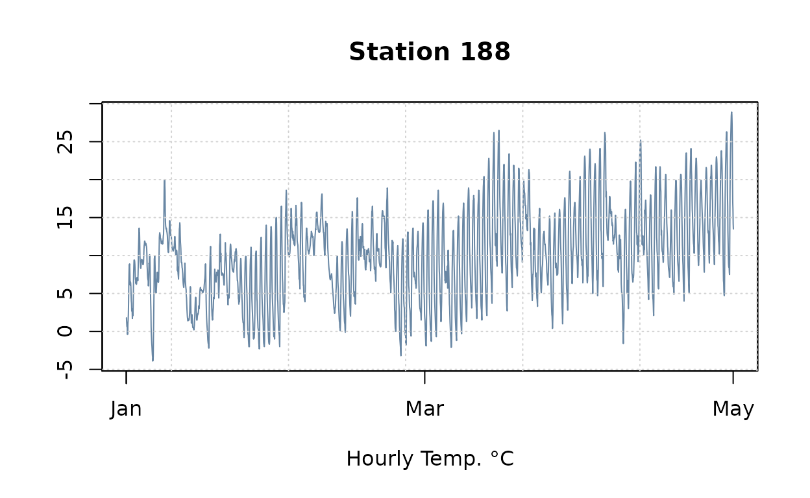
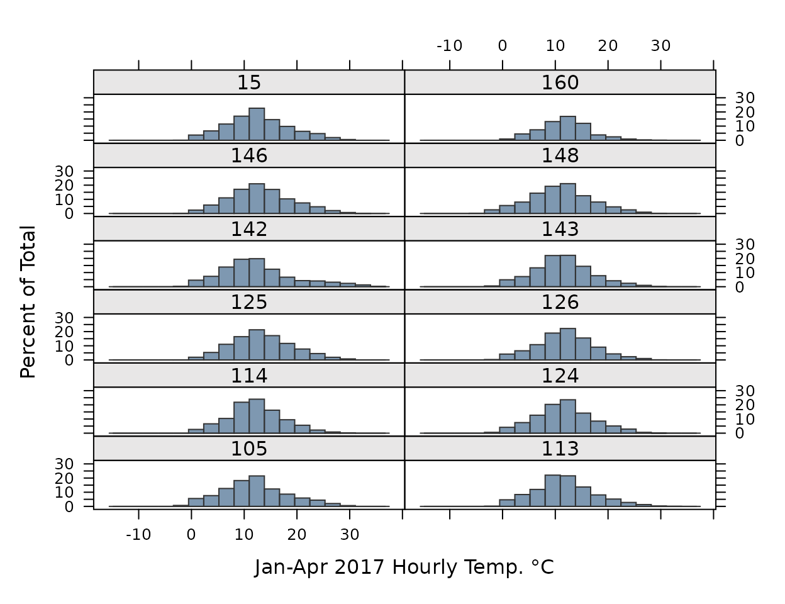
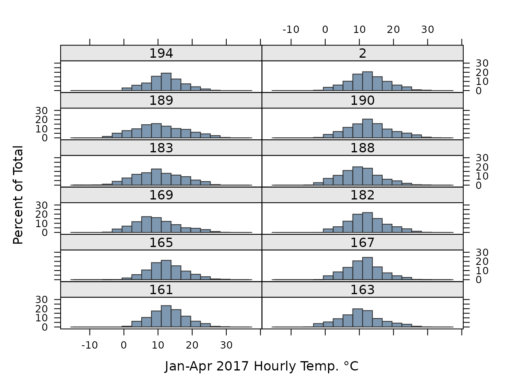
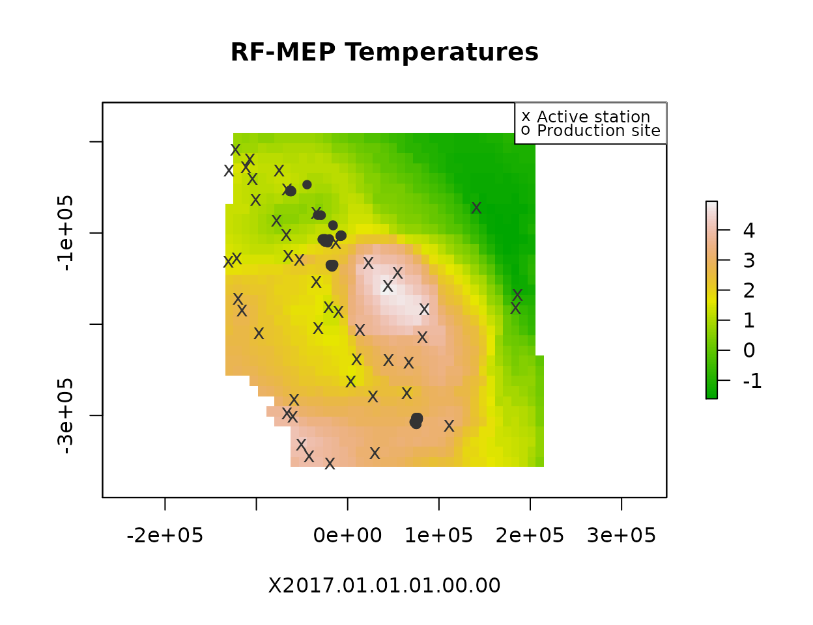
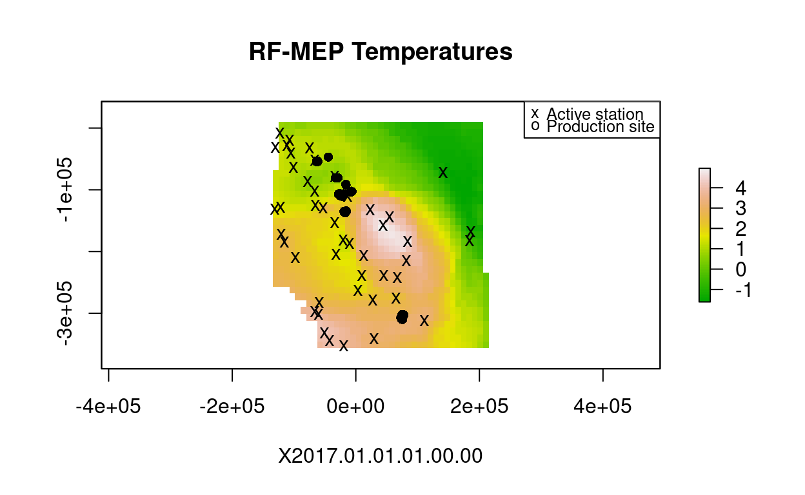
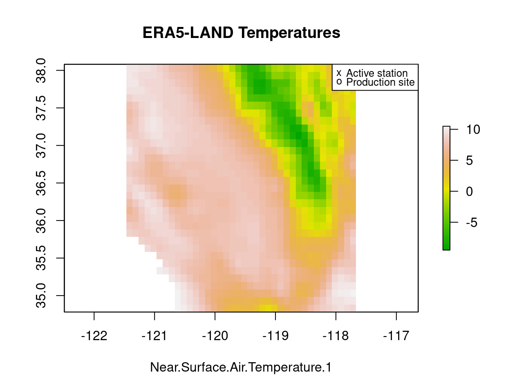
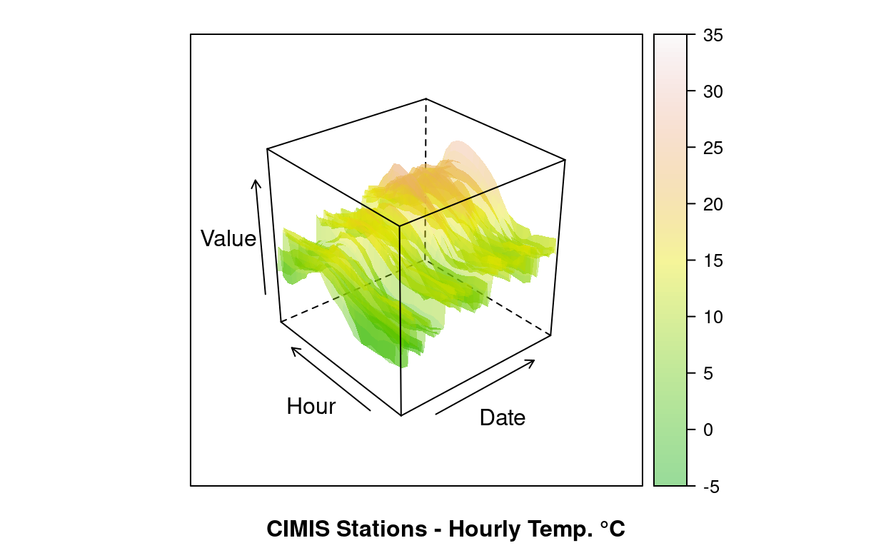
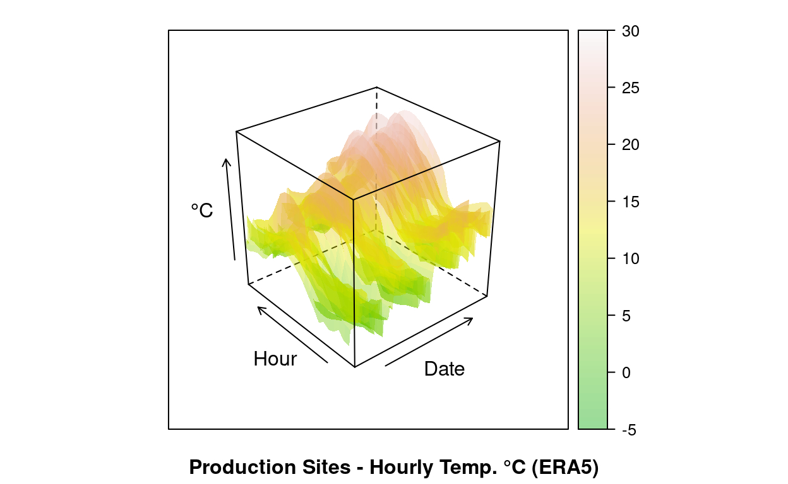

We want to recalibrate ERA5-LAND hourly temperatures to CIMIS ground network observations to address ERA5-LAND model biases noted in California:
- Build CIMIS time-series across OLAM portfolio extent
- Build DEM covariate using ERA5-LAND extent and spatial resolution
- Use RFMerge procedure1 to produce calibrated hourly raster stacks over the past 10 years (limit calibration from Jan-01 to Apr-30 every year)
This work was initially performed for WorldCover PBC and OLAM US, redacted here to omit confidential details.
library(rmarkdown)
library(lattice)
library(raster)
library(tmap)
library(scales)
library(data.table)
library(zoo)
library(cimir)
library(sf)
library(RFmerge)
dir <- "."
load(file.path(dir, "./tmp/2020-burn_olam_usa_06.RData"))
# Default color palette
pal <- readRDS("../../_assets/pal_iwmi.rds")
my.settings <- list(
superpose.polygon=list(col=alpha(pal, .6), border="transparent"),
strip.background=list(col=pal["light"])
)
Define zone of interest and load covariate layers.
# Clear workspace, keep portfolio details
load(file.path(dir, "./tmp/2020-burn_olam_usa_04.RData"))
rm(list=setdiff(ls(), c("dir", "pts.dt")))
pts <- SpatialPointsDataFrame(pts.dt[, .(X,Y)], data.frame(pts.dt),
proj4string=CRS("+init=epsg:4326"))
usa <- getData("GADM", country="USA", level=2)
# Limit to OLAM counties
usa <- usa[usa$NAME_2 %in% pts.dt[, unique(adm2_nm)],]
zoi <- extent(usa)
zoi
# class : Extent
# xmin : -121.4844
# xmax : -117.6166
# ymin : 34.7902
# ymax : 38.07786
# Catalog hourly ERA5 tmean
f <- list.files(file.path(dir, "../maps/ERA5LAND/2m_temperature/hourly/usa.ca"), ".nc",
recursive=T, full.names=T)
# Verify data archive
n <- sapply(f, function(x) nlayers(brick(x, quick=T)))
unique(n)
# [1] 23 24 1 22
bad <- f[names(n[n<24])]
n <- sapply(f[bad], function(x) nlayers(brick(x, quick=T)))
data.table(
fname = basename(f[bad]),
nlayers = n)
# fname nlayers
# 1: daily_1981-01-01.nc 23
# 2: daily_2020-08-01.nc 1
# 3: daily_2020-10-01.nc 22
# 4: daily_2020-10-02.nc 22
# 5: daily_2020-10-03.nc 22
# 6: daily_2020-10-15.nc 22
N <- lapply(f[1:10], function(x) {
s = brick(x, quick=T)
s = setMinMax(s)
s = minValue(s) == maxValue(s)
which(s)
})
bad <- N[sapply(N, `!=`, integer(0))]
Obtain long-term weather station records from CIMIS API.
set_key("27ab5faa-abbb-475e-8af1-f380862bca61")
item <- "hly-air-tmp"
# Keep all CIMIS stations inside ZOI
obs.gis <- cimis_station()
setDT(obs.gis)
obs.gis[1:3, .(ConnectDate, DisconnectDate, HmsLatitude, HmsLongitude)]
# ConnectDate DisconnectDate HmsLatitude HmsLongitude
# 1: 6/7/1982 9/25/1988 36º48'52N / 36.814444 -119º43'54W / -119.731670
# 2: 6/7/1982 9/25/1988 36º48'52N / 36.814444 -119º43'54W / -119.731670
# 3: 6/7/1982 9/25/1988 36º48'52N / 36.814444 -119º43'54W / -119.731670
obs.gis[, `:=`(
# HMS Lat/Lon to degree
X = unlist(tstrsplit(HmsLongitude, " / ", fixed=T, keep=2L)),
Y = unlist(tstrsplit(HmsLatitude, " / ", fixed=T, keep=2L))
)][, `:=`(
X = as.numeric(X),
Y = as.numeric(Y)
)][, `:=`(
# Cast dates
date_start = as.Date(ConnectDate, format="%m/%d/%Y"),
date_end = as.Date(DisconnectDate, format="%m/%d/%Y")
)]
obs.gis[1:3, .(HmsLongitude, HmsLatitude, X, Y, date_start, date_end)]
obs.gis <- obs.gis[, .(StationNbr, Name, X, Y, date_start, date_end, IsActive)]
# There are duplicated stations (?)
obs.gis <- unique(obs.gis, by=c("StationNbr", "X", "Y", "date_start"))
anyDuplicated(obs.gis, by="StationNbr")
# Date ranges that are available
obs.gis[, .(range(date_start), range(date_end))]
# V1 V2
# 1: 1982-05-30 1985-07-23
# 2: 2020-10-28 2050-12-31
obs.gis <- SpatialPointsDataFrame(obs.gis[, .(X, Y)], data.frame(obs.gis),
proj4string=CRS("+init=epsg:4326"))
obs.gis <- crop(obs.gis, zoi)
# Plot maps
plot(crop(raster(r, layer=2), zoi), main=basename(f[2]))
plot(pts, add=T, pch="*")
plot(obs.gis, add=T, col=c("red", "green")[1+(obs.gis$IsActive=="True")], pch="x")
obs.lst <- obs.gis@data[, "StationNbr"]
length(obs.lst)
obs.gis <- setDT(obs.gis@data)
# API limit at 1,750 records so batch it
drange <- c("2017-01-01", "2017-04-30")
obs <- lapply(obs.lst, function(x) {
date_start = obs.gis[StationNbr==x, date_start]
date_end = obs.gis[StationNbr==x, date_end]
date_start = pmax(as.Date(drange[1]), date_start)
date_end = pmin(as.Date(drange[2]), date_end)
res = if(date_end >= date_start) {
s = seq.Date(date_start, date_end, by="10 days")
lapply(s, function(y) {
t = try(cimis_data(
targets=as.integer(x), items=item, measure.unit="M", start.date=y, end.date=y+10-1))
t = if(class(t)[1]=="try-error") NULL else setDT(t)
return(t)
})
} else NULL
return(res)
})
obs <- lapply(obs, rbindlist)
names(obs) <- obs.lst
obs <- rbindlist(obs, fill=T, idcol="StationNbr")
# Clean up
obs[, `:=`(
Name = NULL,
Type = NULL,
Owner = NULL,
Standard = NULL,
ZipCodes = NULL,
Item = NULL,
Qc = NULL,
Unit = NULL
)]
# Verify
obs[StationNbr != Station, .N]
obs[, .N, by=Scope]
obs[, `:=`(
Station = NULL,
Scope = NULL
)]
# Tally
obs[, .(.N, min(Date), max(Date)), keyby=.(StationNbr)]
# => "232" station missing records 2160/2880
obs[, .(.N, sum(is.na(Value)), min(Date), max(Date)), keyby=.(StationNbr)]
24*(as.Date(drange[2])-as.Date(drange[1])+1)
# Nearest to OLAM3 portfolio
ids <- c(168, 206, 145, 188, 148)
fwrite(obs[StationNbr %in% as.character(ids)], "./out/CIMIA_OLAM3_2017.csv")
Prepare DEM at ERA5 layers.
Format station time-series to Zoo wide arrays.
# Prep station time-series, require ZOO wide format
obs[, Time := paste(as.character(Date), Hour)
][, c("Date", "Time") := IDateTime(
as.POSIXlt(Time, format="%Y-%m-%d %H%M", tz="America/Los_Angeles"))]
View(obs[c(1:30, .N)])
# 2017-01-01 2300 => 2017-01-01 23:00
# 2017-01-01 2400 => 2017-01-02 00:00
# => OK
setorder(obs, StationNbr, Date, Time)
obs.ts <- dcast(obs, Date+Time~StationNbr, value.var="Value")
obs.ts <- zoo(
obs.ts[, .SD, .SDcols=-c(1:2)],
order.by=obs.ts[, as.POSIXlt(paste(Date, Time, tz="America/Los_Angeles"))]
)
Implement Random Forest merge algorithm.
# Cut the series at Jan-Apr 2017 (time constraint)
drange <- c("2017-01-01", "2017-04-30")
x1 <- which(f %like% drange[1])
x2 <- which(f %like% drange[2])
f <- f[x1:x2]
f[1]
# Limit ERA5 covariate
era <- brick(as.list(f))
era <- crop(era, zoi, filename="./out/ERA5_2m_temperature_2017.grd", overwrite=T)
era <- brick("./out/ERA5_2m_temperature_2017.grd")
# Align DEM to ERA5
dem <- resample(dem, era[[1]], filename="./out/SRTM_ERA5.grd")
identical(res(dem), res(era))
identical(extent(dem), extent(era))
identical(nlayers(era), nrow(obs.ts))
# ZOI require SF
stations <- sf::st_as_sf(obs.gis, coords=c("X", "Y"), crs=4326)
zoi <- st_as_sfc(st_bbox(usa))
zoi <- st_sf(data.frame(ID=1), geom=zoi)
# Verify CRS
identical(st_crs(zoi), st_crs(era))
identical(st_crs(r), st_crs(era))
# Reproject all to NAD_1983_California_Teale_Albers
NAD83 <- CRS("+init=epsg:3310")
era <- projectRaster(from=era, crs=NAD83)
dem <- projectRaster(from=dem, crs=NAD83)
stations <- st_transform(stations, crs=3310)
pts <- spTransform(pts, CRS("+init=epsg:3310"))
zoi <- st_transform(zoi, crs=3310)
obs.gis[, `:=`(
Lon = st_coordinates(stations)[, "X"],
Lat = st_coordinates(stations)[, "Y"]
)]
# Covariates
covariates <- list(era=era, dem=dem)
obs.meta <- obs.gis[StationNbr %in% names(obs.ts), .(StationNbr, Lon, Lat)]
# RFmerge
dir.create("./out/2017_RFmerge_proj")
mc.cores <- parallel::detectCores()-2
rfmep <- RFmerge(
x = obs.ts,
metadata = obs.meta,
cov = covariates,
id="StationNbr", lat="Lat", lon="Lon", ED=TRUE,
mask=zoi, training=0.9, write2disk=TRUE, drty.out="./out/2017_RFmerge_proj",
parallel="parallel", par.nnodes=mc.cores)
names(rfmep)[c(1:2, nlayers(rfmep))]
# [1] "X2017.01.01.01.00.00" "X2017.01.01.02.00.00" "X2017.05.01.00.00.00"
crs(rfmep)
Extract recalibrated time-series across almond production sites.
# Extract recalibrated time-series across production sites
removeTmpFiles(h=0)
dt.imp <- extract(rfmep, pts)
dt.imp = as.data.table(dt.imp, keep.rownames=TRUE)
dt.imp[, loc_id := pts$loc_id]
dt.imp = melt(dt.imp, id.vars="loc_id", variable.name="time", value.name="value", variable.factor=F)
dt.imp[, time := as.POSIXct(time, format="X%Y.%m.%d.%H.%M.%OS", tz="America/Los_Angeles")]
dt.imp[, range(time)]
dt.imp[, `:=`(
# Convert to IDate
date = as.IDate(time),
time = as.ITime(time)
)]
# Re-extract ERA5-LAND over period to double-check
r <- brick(f[1], quick=T)
pts <- spTransform(pts, crs(r))
dt.era <- lapply(f, function(x) {
r = brick(x, quick=T)
y = extract(r, pts)
y = as.data.table(y, keep.rownames=TRUE)
y[, loc_id := pts$loc_id]
y = melt(y, id.vars="loc_id", variable.name="time", value.name="value", variable.factor=F)
y[, time := as.POSIXct(time, format="X%Y.%m.%d.%H.%M.%OS", tz="UTC")]
})
dt.era <- rbindlist(dt.era)
dt.era[, range(time)]
dt.era[, `:=`(
# Convert to IDate
date = as.IDate(time),
time = as.ITime(time)
)]
# Impute ERA5 hourly time-series with output of RFmerge
dt <- readRDS(file.path(dir, "./tmp/2020-tmean-hourly_olam_ca_almd.rds"))
dt.imp[dt, on=.(loc_id, date, time), era := i.value
][dt.era, on=.(loc_id, date, time), era_valid := i.value]
# Save
dt <- dt[!dt.imp, on=.(loc_id, date, time)]
dt <- rbind(dt, dt.imp[, .SD, .SDcols=names(dt)])
setorder(dt, loc_id, date, time)
saveRDS(dt, file.path(dir, "./tmp/2020-tmean-hourly_olam_ca_almd_imputed.rds"))
rm(x, i, j, t, tmp, dem1, dem2, dem3, dem4, n, x1, x2, dt, dtc)
save.image(file.path(dir, "./tmp/2020-burn_olam_usa_06.RData"))
Validate ZOI, DEM, and ERA5 covariates.
era <- brick("./out/ERA5_2m_temperature_2017.grd")
era <- raster(era, 1)
tmap_mode("view")
tm_shape(era) +
tm_raster(title="ERA5-LAND<br/>Temperature<br/>2020-02-01 00:00<br/>°C", alpha=.6) +
tm_shape(stations) + tm_dots("black", title="CIMIS WS") +
tm_shape(pts) + tm_dots("blue", title="OLAM Site") +
tm_shape(pts[pts$loc_id %in% c(25, 82, 83), ]) +
tm_dots("red")
DEM at ERA5 extent and resolution.
pts <- spTransform(pts, CRS("+init=epsg:3310"))
plot(dem, main="SRTM 90m (meter)",
col=terrain.colors(80, alpha=1))
plot(zoi, add=T, lty=2, col=NA)
plot(pts, add=T, pch=16)
plot(stations, add=T, col=pal[c("red", "green")][1+(obs.gis$IsActive=="True")], pch="x")
legend("topright", legend=c("Active station", "Stale station", "Production site"),
col=pal[c("red", "green", "black")], pch=c("x", "x", "o"), cex=.8)

CIMIS station observations between Jan-Apr 2017.
obs[, .(
`Obs.` = comma(.N),
`NA` = percent(sum(is.na(Value))/.N),
`Min.` = min(Value, na.rm=T),
`Max.` = max(Value, na.rm=T),
`Date Range` = paste(range(Date, na.rm=T), collapse=" - ")
), keyby=.(StationNbr)] %>%
paged_table()
plot(obs.ts[,1], col=alpha(pal[1], .7),
main=paste("Station", names(obs.ts)[1]), xlab="Hourly Temp. °C", ylab=NA)
grid()

plot(obs.ts[,20], col=alpha(pal[1], .7),
main=paste("Station", names(obs.ts)[20]), xlab="Hourly Temp. °C", ylab=NA)
grid()

histogram(~Value|StationNbr, data=obs,
col=alpha(pal[1], .6), border=pal["black"],
par.settings=my.settings,
layout=c(2,6), xlab="Jan-Apr 2017 Hourly Temp. °C")


plot(rfmep[[1]], main="RF-MEP Temperatures", xlab=names(rfmep)[1],
col=terrain.colors(80, alpha=1))
plot(pts, pch=16, col=pal["black"], add=T)
plot(stations[stations$StationNbr %in% names(obs.ts),], pch="x", col=pal["black"], add=T)
legend("topright", legend=c("Active station", "Production site"), pch=c("x", "o"), cex=.8)

plot(era[[1]], main="ERA5-LAND Temperatures", xlab=names(era)[1],
col=terrain.colors(80, alpha=1))
plot(pts, pch=16, col=pal["black"], add=T)
plot(stations[stations$StationNbr %in% names(obs.ts),], pch="x", col=pal["black"], add=T)
legend("topright", legend=c("Active station", "Production site"), pch=c("x", "o"), cex=.8)

Hourly time-series from CIMIS ground stations:
wireframe(Value~as.numeric(Date)*Time, data=obs,
xlab="Date", ylab="Hour", sub="CIMIS Stations - Hourly Temp. °C",
col=NA, col.regions=terrain.colors(100, alpha=.4), drape=T,
at=do.breaks(c(-5,35), 100)
)

Compared to hourly time-series at production sites from ERA5-LAND:
wireframe(era~as.numeric(date)*time, data=dt.imp,
xlab="Date", ylab="Hour", zlab="°C",
sub="Production Sites - Hourly Temp. °C (ERA5-LAND)",
col=NA, col.regions=terrain.colors(100, alpha=.4), drape=T,
at=do.breaks(c(-5,30), 100)
)

Mean recalibration effect across production sites (after RFmerge):
wireframe((value-era)~as.numeric(date)*time, data=dt.imp,
xlab="Date", ylab="Hour", zlab="°C",
sub="ERA5-LAND Mean Recalibration Effect\nacross Production Sites\nHourly Temp. °C",
col=NA, col.regions=terrain.colors(100, alpha=.4), drape=T
)

FDD index across sites between Feb-01 and Mar-31, 2017 (before and after ground calibration):
dt.imp[date %between% c("2017-02-01", "2017-03-31"), .(
era = min(era, na.rm=T),
era_valid = min(era_valid, na.rm=T),
value = min(value, na.rm=T)
), by=.(loc_id, date)][, .(
`FDD (before)` = sum(fifelse(era<0, pmax(era, -4, na.rm=T), 0), na.rm=T),
`FDD (validate)` = sum(fifelse(era_valid<0, pmax(era_valid, -4, na.rm=T), 0), na.rm=T),
`FDD (after)` = sum(fifelse(value<0, pmax(value, -4, na.rm=T), 0), na.rm=T)
), keyby=.(loc_id)]%>%
paged_table()
See Baez-Villanueva, O. M., Zambrano-Bigiarini, M., Diego, J., Osorio, G.-, & Mcnamara, I. (2020). Tutorial for merging satellite-based precipitation datasets with ground observations using RFmerge.↩︎